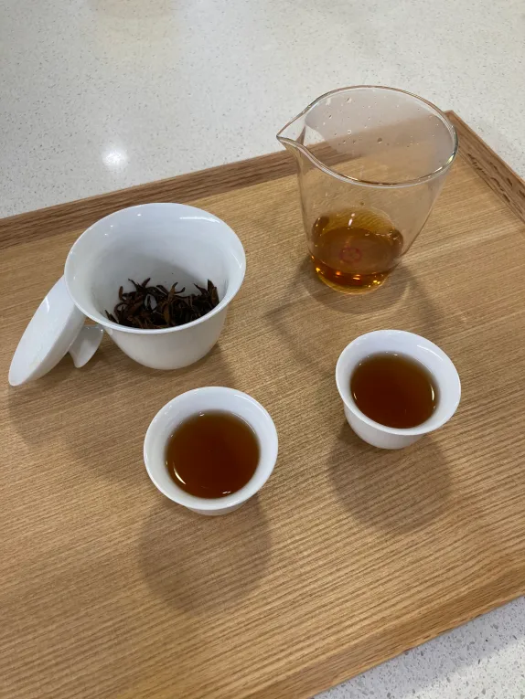

二月好！这周有点忙，过得也比较混沌。本来想耍赖旷掉这周的周记，但是想想才二月的第一周就鸽是不是有点快……再坚持一下吧。
虽说加州最近是雨季，但是这雨也似乎太有脾气了一点，专挑周末的时候下。最近有一颗彗星ZTF (C/2022 E3)很受关注，本来周三/周四是观测的好机会，可惜有云后来又下雨错过了。下周的预测亮度就不是那么容易看到了，不过可能还是会周五去附近的社区大学天文台试试。
前几天在论坛上看到有朋友分享喝茶的心得，就想起来我去年一时兴起买的盖碗还在积灰。周六去城里的茶店买了茶叶，然后泡着玩了一下。一样的茶叶，自己泡的时候香气和味觉的层次就是没有茶店老板泡出来的好。准备再多试几次看看。在店里的时候看老板每次把茶从盖碗里倒到公道杯里的时候都是单手操作，一边还和我们说话，简直轻轻松松。等到自己泡的时候才发现，如果水温到170°F以上盖碗就有点烫手了，180°F我单手基本上是拿不住的。所以我倒茶的时候简直是着急忙慌龇牙咧嘴地单手换双手。除此之外，泡茶喝茶的过程还是非常舒适的，而且在那段时间里都专注这一件事情的体验非常好。

读了什么
《Moby Dick》还在缓慢地读，目前到第39章了。这书里的reference简直是多到爆炸，基本上一边读一边都得随手查字典/维基。除了用典，还给我扫盲了一些航海的知识。比如我并不知道船的两侧是有具体的名称的，而不是只是简单用左右来指代。仔细想想是蛮有道理的，毕竟谁也不知道你在船上喊左侧的时候面朝的是船头还是船尾。
上周末的时候被读书会推荐了《秋园》。一开始是带着点好奇读了一章，但是一开始读就放不下了，花了两天半读完了。作者是一位已经八旬了的奶奶，年近七十开始写作。整本书非常好读，好几次我感觉自己像是被里面的情节拎着一路小跑地往前读。书里描写的经历我既熟悉又陌生。虽然它们作为历史上的事件我多多少少是听说过的，但是读这些具体到个体的苦难叙述的时候还是非常被震撼，太难过了只能说。当一个历史里的“普通人”，把自己的经历写下来，她的文字是那么的有力量。我们太需要更多的这样的普通人的记录了。
另外这周非常机缘巧合地读了一本诗集。恐怕是我自从高中语文课以来第一次读诗了吧。起因是家里楼下最近新开了一家小书店（也卖一些杂物，有一点自私地希望他们最后能转型专卖书，并且不要卖童书，毕竟两个block外就是一家专门的童书店）。前几天走过的时候每次看好像都没什么顾客，有点冷清。周六早上买完咖啡就顺路进去转了转，想要买点什么支持一下，希望小店能长开下去。想来想去还是买本诗集吧，读不完的话剩下也不会太多（我也不知道当时在想什么，又不是买吃的，但就是这么想的）。就买了Louise Glück的[]《The Wild Iris》](https://book.douban.com/subject/2384696/)。读了还挺喜欢的。整个诗集写了一个花园从一个冬天的尾巴到一个夏天的结束，时光在花园里流转而去。最喜欢《snowdrops》，《spring snow》，和《retreating wind》那三篇。能够感受到诗体用非常精简的字句勾勒出很具象的情景。比如这写风的这一段，把风这种无色无形的物体给勾勒出来了：
your lives are the bird’s flight Which begins and ends in stillness – which begins and ends, in form echoing this arc from the white birch to the apple tree.
看了什么
开始看HBO的《The Last of Us》。看了两集晚上居然还做噩梦惊醒了，又怕又想看。犹豫着点开第三集，没想到第三集变温情了。目前为止主角们都很喜欢。虽然有时候ellie在情节紧张的时候语速飞快地说着无关紧要的事情会让我有那么一点烦躁。应该会继续追下去。
听了什么
这周没有印象深刻的播客。
好啦，流水账写完了，我也能安心睡觉去了。
祝下周愉快！